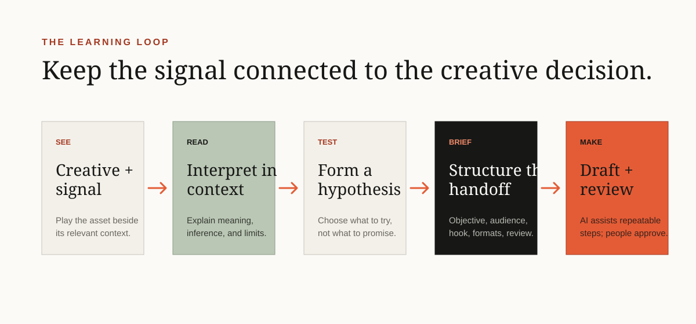

Make every creative asset playable.
The working artifact presented ads beside relevant metrics so analysis could begin with the customer-facing execution.
I built a learning and production system that put playable creative beside relevant signals, translated those signals into testable hypotheses, and connected the learning to structured briefs and human-reviewed production.
Reporting can separate the number from the thing a customer actually saw. I wanted a working environment where I could play each ad, see the relevant signals beside it, understand what those signals could and could not mean, and decide what to test next.
The goal was not to turn a dashboard into an oracle. It was to close the distance between analysis, creative judgment, and production—while learning the performance discipline through real creative decisions.
The implemented dashboard brought playable creative and its relevant performance context into one view.
I specified contextual explanations that clarified what a metric might suggest—and what it could not prove.
The system framed next steps as creative hypotheses to evaluate, never guaranteed improvements.
I wanted to understand performance through the creative itself. So I built a dashboard that made each ad playable, with the relevant signals beside it. I added contextual explanations, so the system could teach while I worked. Each signal could lead to a testable creative recommendation.
I shared the approach with teammates in video and design, and kept refining it. Then I connected the recommendations to campaign concepts and structured creative briefs. Those briefs could feed an AI-assisted production workflow, with organized footage, brand rules, required formats, and human review.
The result was a connected learning loop, from performance signal to production-ready creative. I did not build a dashboard just to report what happened. I built a system to help people understand what happened, decide what to test, and make the next piece of creative.

The working artifact presented ads beside relevant metrics so analysis could begin with the customer-facing execution.
I designed contextual guidance around meaning, inference, and limits. The public case does not claim every learning feature was fully implemented.
Ideas such as a new hook, shorter edit, different call to action, or static companion remained hypotheses for human evaluation.
Campaign concepts connected to briefs covering objective, audience, funnel stage, hook, formats, ratios, and review criteria.
Custom workflows organized footage, carried brand requirements, and supported draft variations in the required formats.
AI assisted research, organization, and production steps; people retained responsibility for context, taste, accuracy, and release.
A working artifact put multiple ads and their relevant signals into one review experience.
Structured briefs, organized source media, and AI-assisted production components extended the concept beyond reporting.
This case makes no quantified performance claim and does not present the workflow as fully autonomous.
Converted a personal learning objective into a concrete product experience with users, boundaries, and a repeatable operating model.
Kept the creative visible while translating performance signals into testable production decisions.
Connected briefs, organized footage, format requirements, and draft creation without removing human accountability.